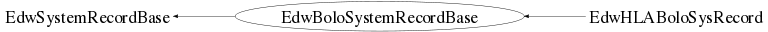

class EdwBoloSystemRecordBase: public EdwSystemRecordBase
EdwBoloSystemRecordBase.cc EdwDataStructure Author: Adam Cox <mailto:adam.cox@ik.fzk.de> on 3/25/10. * Copyright 2010 Karlsruhe Institute of Technology. All rights reserved. This is base class for all Bolo System Records. It contains the run name, given as the first four alpha-numeric values of the run name from Samba. For example, kc21, is 2010, March 21st.
Function Members (Methods)
public:
private:
| void | CopyLocalMembers(const EdwBoloSystemRecordBase& aRec) |
| void | InitializeMembers() |
Class Charts
{kind=link}
{kind=link}
{kind=link}
{kind=link}

Function documentation
EdwBoloSystemRecordBase(const EdwBoloSystemRecordBase& aSysRec)
~EdwBoloSystemRecordBase(void)
EdwBoloSystemRecordBase(const EdwBoloSystemRecordBase& aSysRec)
EdwBoloSystemRecordBase& operator=(const EdwBoloSystemRecordBase& aSysRec)
void CopyLocalMembers(const EdwBoloSystemRecordBase& aRec)
Bool_t IsSame(const EdwBoloSystemRecordBase& aRec, Bool_t bPrint = false) const
void Compact(void)
make the event class as small as possible. this calls 'Compact' for all member variables that are EdwDS classes, member variables that can be compacted (such as TBits) and base classes